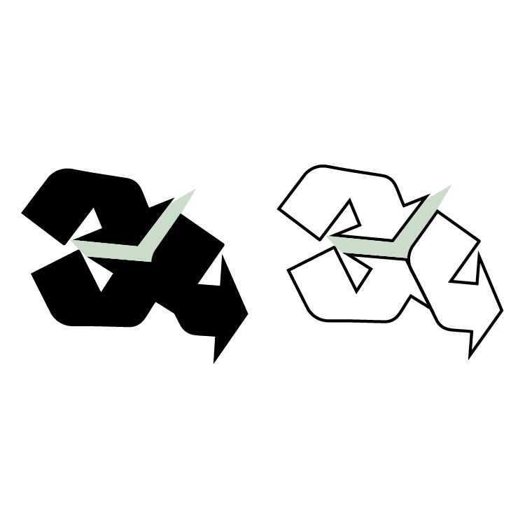
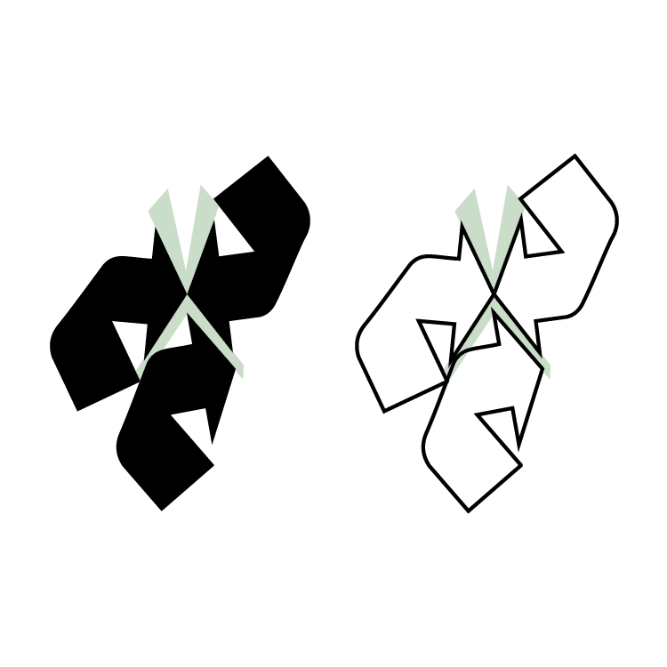
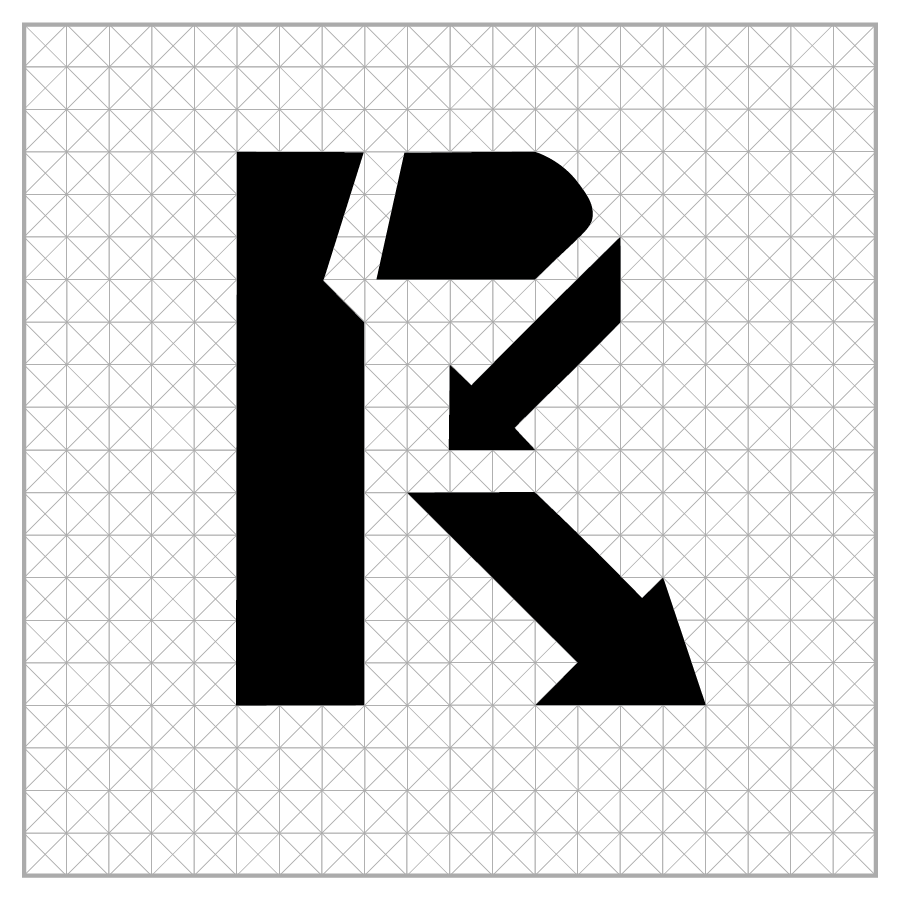
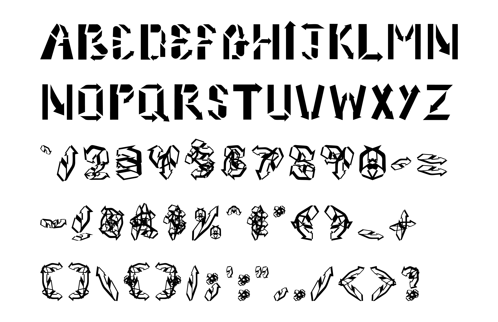
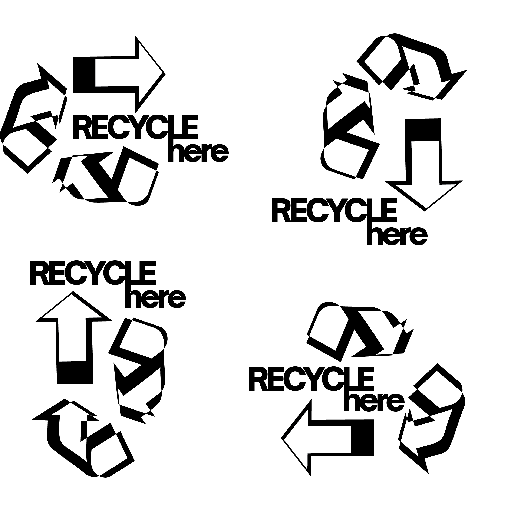
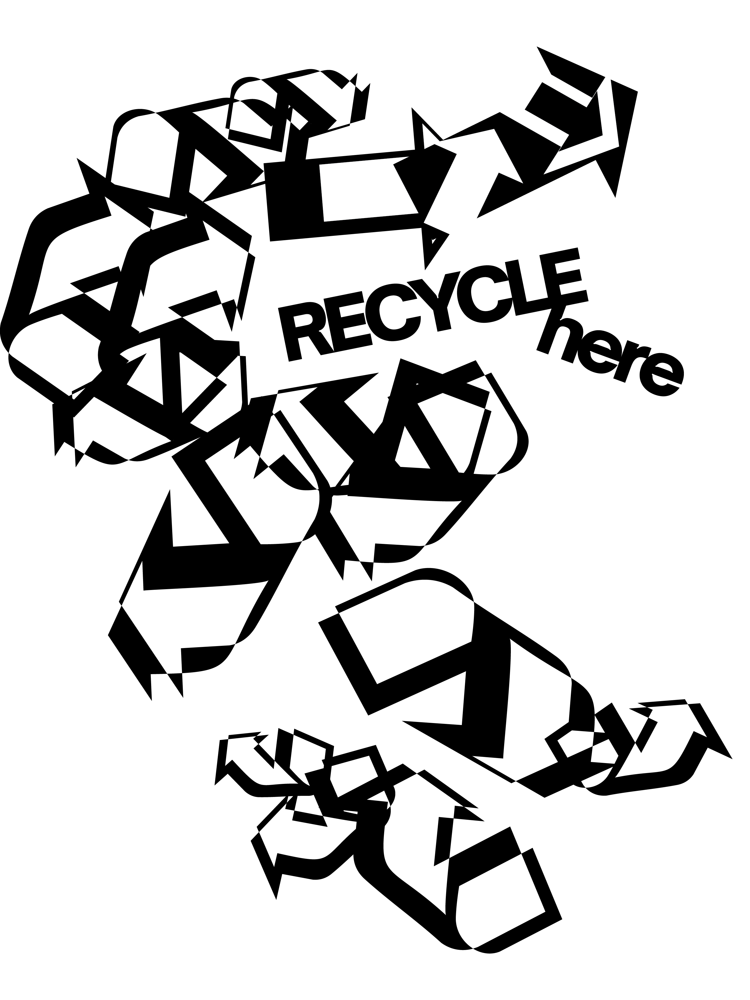
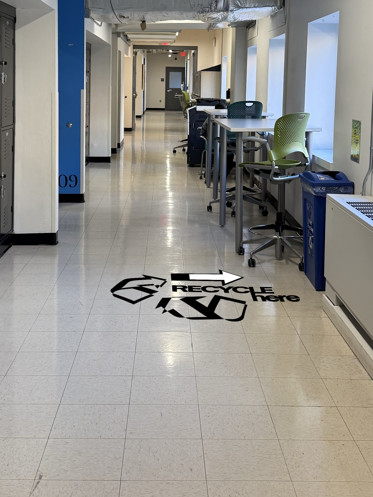
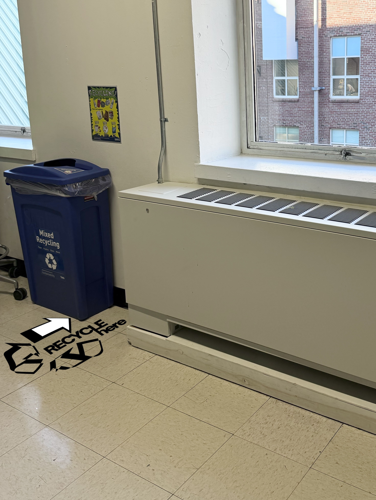
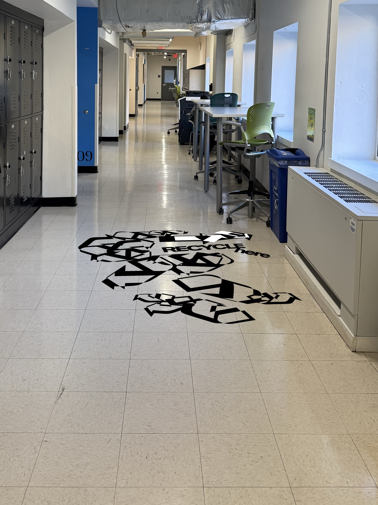
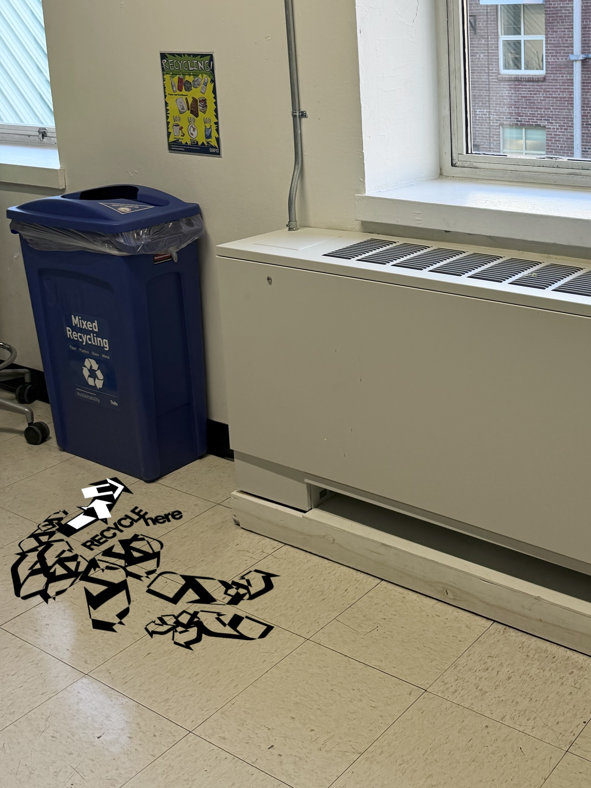

A speculative identity and wayfinding system that questions the recycling symbol as an unregulated promise. It replaces blind trust with an honest and binary verdict of the American recycling system.
Overview
RECYCLE, verb:
to convert waste into reusable material.
In theory, the recycling symbol is a promise that a product completes the conversion to regain material for human use. However, it is an unregulated promise. The current symbol implies an item will be recycled even when the infrastructure to actually process it does not exist.
The Recycling Mirage is a critical branding project that asks whether the system is actually working or just designed to look like it is. It builds out a full identity of a color system, custom typography, a redesigned mark, and wayfinding signage that turns the familiar chasing-arrows symbol into a clearer design instead of a vague reassurance.
Research
Only 9% of all plastic ever produced has been recycled, globally.
The U.S. reality is worse: the plastic recycling rate is around 5–6%.
Most waste that does get processed is not recycled into a new bottle. It is downcycled into lower-value goods like park benches or textiles that ultimately cannot be recycled again.
Guidelines
Do
Don't
Color
Black + White = moral clarity. Something either is recyclable in your local system, or it is not. There is no middle ground.
Grayish Green = to expose the recycling symbol itself as an unregulated promise: the lie
Critique
The current recycling symbol is a lie by omission. It promises a circular solution for packaging that the infrastructure was not built to handle. Thus, people tend to trust the symbol without fully knowing whether it is true for their own city, their own hauler, or their own bin.
The proposed mark keeps the familiar three arrows but adds a verdict. A small checkmark inside the arrows means an item is actually recyclable in most municipal systems. A large cross through the mark means it is technically recyclable, just not accepted by around 80% of curbside programs.
Proposed Mark


Typography
The typeface is built from the same three chasing arrows that make up the recycling logo, but deconstructed into letterforms. The font sheet below lays out the full alphabet and symbols.
The letters are structurally clear to represent the system's official face, while the numbers and symbols fracture into chaos to expose what is actually underneath. A promise with no real regulation holding it together.
Font System
The typeface is constructed on a detailed grid system, with every letterform's angles and arcs mapped back to the geometry of the original recycling arrows.

Final Font

Regulations
The same honest-verdict logic extends into physical space. A short set of rules keeps the system from becoming just another confusing icon:
Wayfinding
The signage repurposes the recycling arrows. One arrow breaks formation to point toward a direction, with "recycle here" following its lead.
When an item is confirmed recyclable in the local system, the signage stays clean and legible. It has a directional arrow pointing to the recycling bin.

When the material is a wishcycling risk, the same system fractures into scrambled arrows, echoing the confusion it is meant to cut through.

Signage in Application



